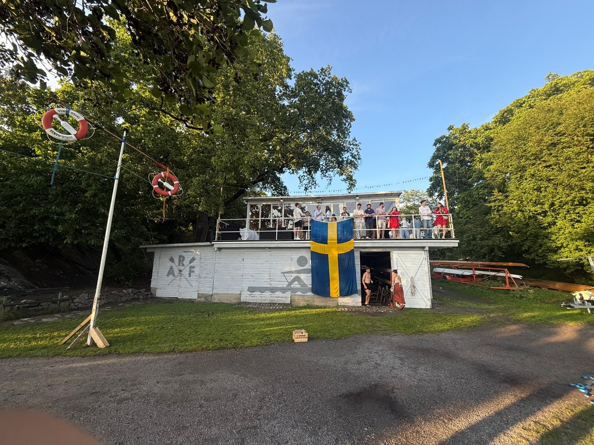
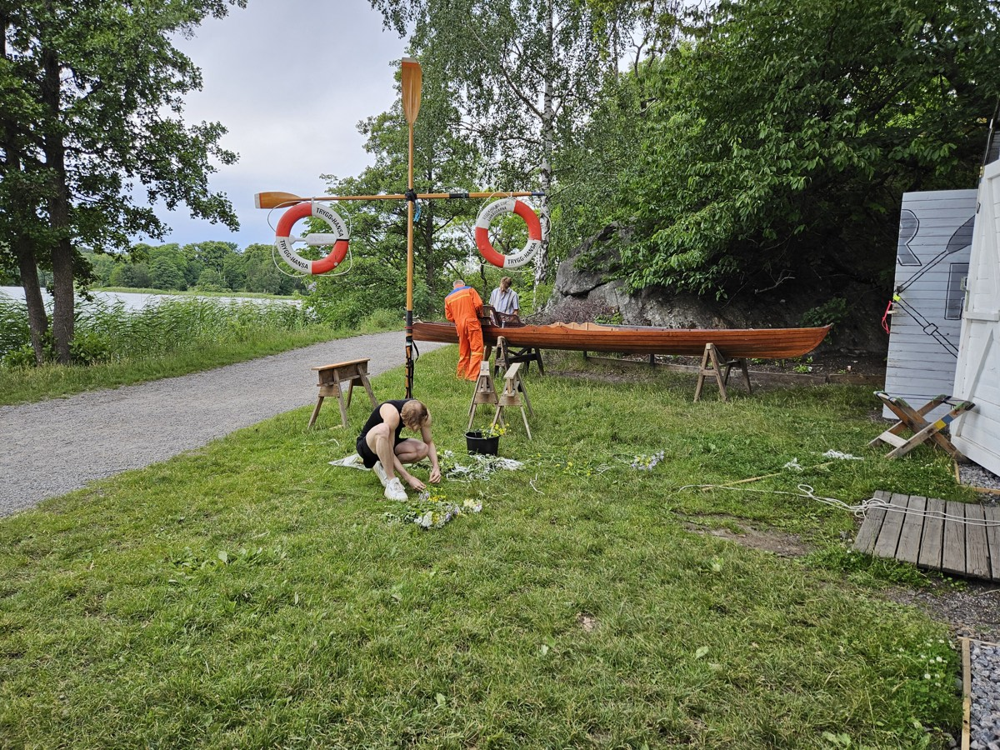
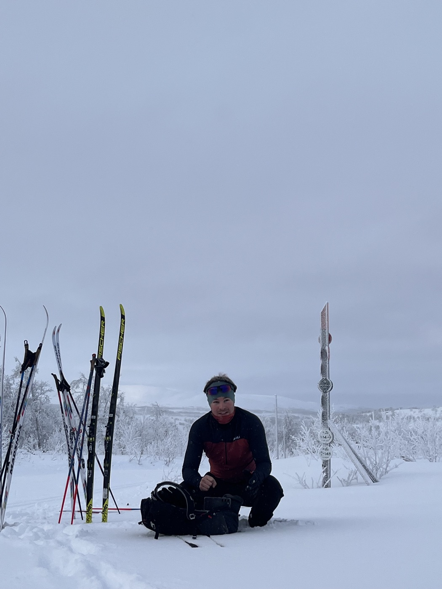
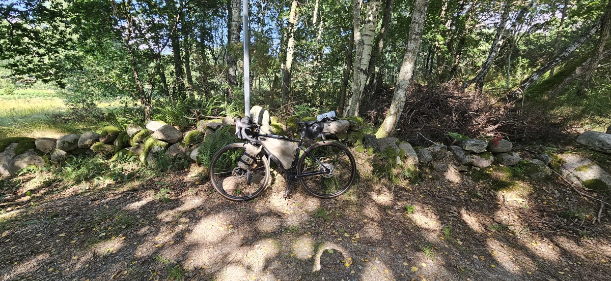
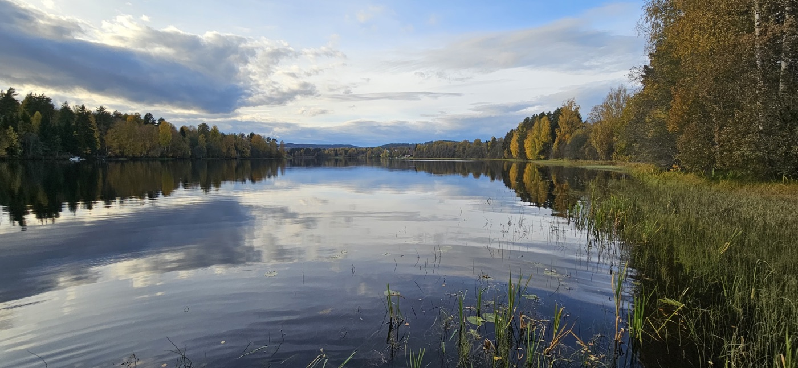
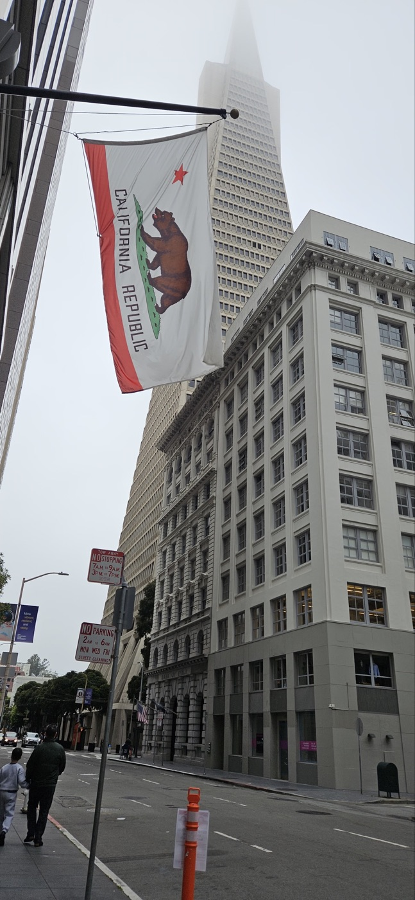
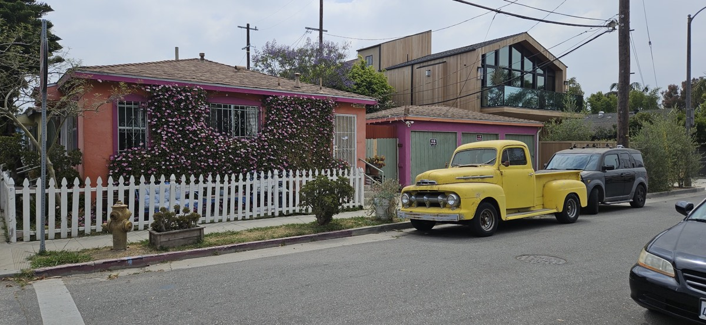

Off hours — logbook
The hours between commits.
Mostly outside, mostly on water in one of its states — liquid in summer, frozen in winter — and sometimes far from Stockholm altogether.
On the water
I row competitively, and from 2024 to 2026 I served on the board of Akademiska Roddföreningen — responsible for the club's boats and equipment, and stepping in as interim coach for the competitive team. A rowing club is a hundred small jobs nobody sees: varnish days, rigging repairs, a Swedish flag hung over the boat-bay doors for midsummer. That's the part I loved.



On the ice
Swedish winters converted me: long-distance skating when the natural ice carries, cross-country touring when the snow is right, alpine when it isn't. The season the water freezes is the season I look forward to most.


Elsewhere
I travel slow when I can — a loaded bike through rural Sweden, a backpack further afield. It started with an Erasmus winter in Linköping that eventually turned into a life here.




